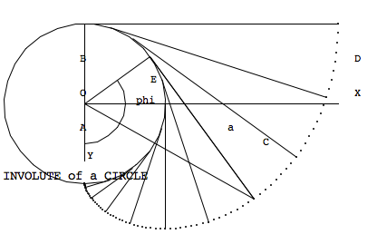
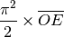
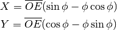
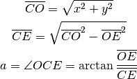
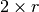
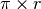

involute – Involute of a Circle¶
Analysis¶
Here’s what may be the diagram from HamCalc.
{kind=link}
The subtlety is that HamCalc includes an aspect ratio correction for the graphics.
The locations of the label for vertex C and angle a appear to be misplaced. Also the angle phi isn’t perfectly clear from the diagram.
It seems to match the standard definition of an involute.
The program asks for “Radius OE”, , and computes
“Diameter AB”
“Base Line BD”
“Involute ACD”

It then asks for angle “phi” and computes “Values for point C”.
It produces X and Y coordinate for point C.

It produces angle a, also knows as OCE

It produced angle COE () and the lengths line CO and CE.
Implementation¶
Involute uses R and Phi to compute a number of values.
hamcalc.math.involute
Compute various parts of the involute of a circle.
Test Cases
>>> import hamcalc.math.involute as involute
>>> import math
>>> involute.involute( radius=91 )
{'diameter': 182, 'radius': 91, 'baseline': 285.88493147667117, 'involute': 449.0670002495658}
>>> i= involute.involute( radius=91, phi=math.radians(144) )
>>> i
{'diameter': 182, 'phi': 2.5132741228718345, 'CO': 316.5057744165644, 'baseline': 285.88493147667117, 'COE': 1.2791655754811324, 'OCE': 0.2916307513137641, 'CE': 303.1417246751578, 'radius': 91, 'C_Y': -208.05170374782548, 'C_X': 238.51707235889052, 'involute': 449.0670002495658}
>>> math.degrees( i.OCE )
16.70921122650797
>>> math.degrees( i.COE )
73.29078877349203
>>> involute.involute( radius=12, phi=math.radians(60) )
math domain error computing sqrt( 6.382**2- 12.000**2)
{'diameter': 24, 'phi': 1.0471975511965976, 'CO': 6.38173659497964, 'baseline': 37.69911184307752, 'COE': nan, 'OCE': nan, 'CE': nan, 'radius': 12, 'C_Y': -4.882796185405304, 'C_X': 4.109119538233676, 'involute': 59.21762640653615}
- hamcalc.math.involute.involute(radius, phi=None)[source]¶
Compute involute dimensions given radius and optional angle phi.
Parameters: - radius – Radius of circle
- phi – optional angle in radians.
Returns: dictionary with numerous values for the involute.
- radius, given
- diameter, 
- baseline, 
- involute circumference
If Phi is provided
- phi, given
- C_X, C_Y, location of point C on the involate at angle phi
- CO length of the line from origin to C
- CE length of the line from circumference to C
- OCE the angle at C (on involute) between O and E (on circumference)
- COE the angle at O between C (on involute) and E (on circumference)
Legacy Quirks¶
Lines 880-900 cannot be executed.